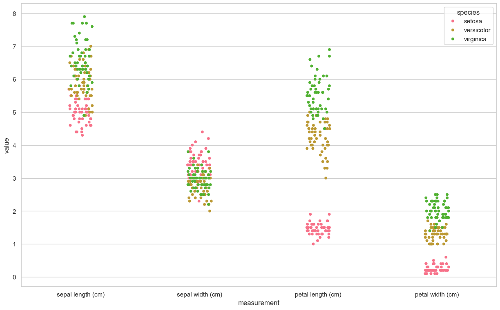
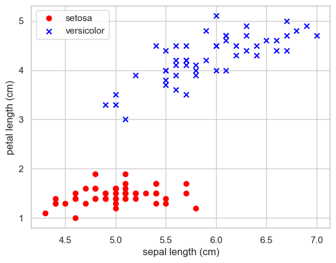

# Remove warnings
import warnings
warnings.filterwarnings('ignore')Structured data
Data as variables
# variables
customer1_age = 38
customer1_height = 178
customer1_loan = 34.23
customer1_name = 'Zajac'Why don’t we use variables for data analysis?
In Python, regardless of the type of data being analyzed and processed, we can collect data and represent it as a form of list.
# python lists - what we can put on list ?
customers = [[38, 278, 34.23, 'Zajac'],[38, 278, 34.23, 'kowalski']]
print(customers)[[38, 278, 34.23, 'Zajac'], [38, 278, 34.23, 'kowalski']]# different types in one object
type(customers)listWhy lists aren’t the best place to store data?
Let’s take two numerical lists.”
# two numerical lists
a = [1,2,3]
b = [4,5,6]Typical operations on lists in data analysis
# add lists
print(f"a+b: {a+b}")
# we can use .format also
print("a+b: {}".format(a+b))a+b: [1, 2, 3, 4, 5, 6]
a+b: [1, 2, 3, 4, 5, 6]# multiplication
try:
print(a*b)
except TypeError:
print("no-defined operation")no-defined operationimport numpy as np
aa = np.array(a)
bb = np.array(b)
print(aa,bb)[1 2 3] [4 5 6]np.array([34, 234.23])array([ 34. , 234.23])print(f"aa+bb: {aa+bb}")
# add - working
try:
print("="*50)
print(aa*bb)
print("aa*bb - is this correct ?")
print(np.dot(aa,bb))
print("np.dot - is this correct ?")
except TypeError:
print("no-defined operation")
# multiplicationaa+bb: [5 7 9]
==================================================
[ 4 10 18]
aa*bb - is this correct ?
32
np.dot - is this correct ?# array properties
x = np.array(range(4))
print(x)
x.shape[0 1 2 3](4,)A = np.array([range(4),range(4)])
# transposition row i -> column j, column j -> row i
A.Tarray([[0, 0],
[1, 1],
[2, 2],
[3, 3]])# 0-dim object
scalar = np.array(5)
print(f"scalar object dim: {scalar.ndim}")
# 1-dim object
vector_1d = np.array([3, 5, 7])
print(f"vector object dim: {vector_1d.ndim}")
# 2 rows for 3 features
matrix_2d = np.array([[1,2,3],[3,4,5]])
print(f"matrix object dim: {matrix_2d.ndim}")scalar object dim: 0
vector object dim: 1
matrix object dim: 2
PyTorch
PyTorch is an open-source Python-based deep learning library. PyTorch has been the most widely used deep learning library for research since 2019 by a wide margin. In short, for many practitioners and researchers, PyTorch offers just the right balance between usability and features.
PyTorch is a tensor library that extends the concept of array-oriented programming library NumPy with the additional feature of accelerated computation on GPUs, thus providing a seamless switch between CPUs and GPUs.
PyTorch is an automatic differentiation engine, also known as autograd, which enables the automatic computation of gradients for tensor operations, simplifying backpropagation and model optimization.
PyTorch is a deep learning library, meaning that it offers modular, flexible, and efficient building blocks (including pre-trained models, loss functions, and optimizers) for designing and training a wide range of deep learning models, catering to both researchers and developers.
import torchtorch.cuda.is_available()Falsetensor0d = torch.tensor(1)
tensor1d = torch.tensor([1, 2, 3])
tensor2d = torch.tensor([[1, 2, 2], [3, 4, 5]])
tensor3d = torch.tensor([[[1, 2], [3, 4]], [[5, 6], [7, 8]]])print(tensor1d.dtype)torch.int64torch.tensor([1.0, 2.0, 3.0]).dtypetorch.float32tensor2dtensor([[1, 2, 2],
[3, 4, 5]])tensor2d.shapetorch.Size([2, 3])print(tensor2d.reshape(3, 2))tensor([[1, 2],
[2, 3],
[4, 5]])print(tensor2d.T)tensor([[1, 3],
[2, 4],
[2, 5]])print(tensor2d.matmul(tensor2d.T))tensor([[ 9, 21],
[21, 50]])print(tensor2d @ tensor2d.T)tensor([[ 9, 21],
[21, 50]])more info on pytorch
Data Modeling
Let’s take one variable (xs) and one target variable (ys - target).
xs = np.array([-1,0,1,2,3,4])
ys = np.array([-3,-1,1,3,5,7])What kind of model we can use?
# Regresja liniowa
import numpy as np
from sklearn.linear_model import LinearRegression
xs = np.array([-1,0,1,2,3,4])
# a raczej
xs = xs.reshape(-1, 1)
ys = np.array([-3, -1, 1, 3, 5, 7])
reg = LinearRegression()
model = reg.fit(xs,ys)
print(f"solution: x1={model.coef_[0]}, x0={reg.intercept_}")
solution: x1=2.0, x0=-1.0array([1.])model.predict(np.array([1,5,5,2,4]).reshape(-1,1))array([1., 9., 9., 3., 7.])The simple code fully accomplishes our task of finding a linear regression model.
What can we use such a generated model for?
To make use of it, we need to export it to a file.
# save model
import pickle
with open('model.pkl', "wb") as picklefile:
pickle.dump(model, picklefile)Now we can import it (for example, on GitHub) and utilize it in other projects.
# load model
with open('model.pkl',"rb") as picklefile:
mreg = pickle.load(picklefile)But !!! remember about Python Env
mreg.predict(xs)array([-3., -1., 1., 3., 5., 7.])Other ways of acquiring data
- Ready-made sources in Python libraries.
- Data from external files (e.g., CSV, JSON, TXT) from a local disk or the internet.
- Data from databases (e.g., MySQL, PostgreSQL, MongoDB).
- Data generated artificially for a chosen modeling problem.
- Data streams.
from sklearn.datasets import load_iris
iris = load_iris()# find all keys
iris.keys()dict_keys(['data', 'target', 'frame', 'target_names', 'DESCR', 'feature_names', 'filename', 'data_module'])# print description
print(iris.DESCR).. _iris_dataset:
Iris plants dataset
--------------------
**Data Set Characteristics:**
:Number of Instances: 150 (50 in each of three classes)
:Number of Attributes: 4 numeric, predictive attributes and the class
:Attribute Information:
- sepal length in cm
- sepal width in cm
- petal length in cm
- petal width in cm
- class:
- Iris-Setosa
- Iris-Versicolour
- Iris-Virginica
:Summary Statistics:
============== ==== ==== ======= ===== ====================
Min Max Mean SD Class Correlation
============== ==== ==== ======= ===== ====================
sepal length: 4.3 7.9 5.84 0.83 0.7826
sepal width: 2.0 4.4 3.05 0.43 -0.4194
petal length: 1.0 6.9 3.76 1.76 0.9490 (high!)
petal width: 0.1 2.5 1.20 0.76 0.9565 (high!)
============== ==== ==== ======= ===== ====================
:Missing Attribute Values: None
:Class Distribution: 33.3% for each of 3 classes.
:Creator: R.A. Fisher
:Donor: Michael Marshall (MARSHALL%PLU@io.arc.nasa.gov)
:Date: July, 1988
The famous Iris database, first used by Sir R.A. Fisher. The dataset is taken
from Fisher's paper. Note that it's the same as in R, but not as in the UCI
Machine Learning Repository, which has two wrong data points.
This is perhaps the best known database to be found in the
pattern recognition literature. Fisher's paper is a classic in the field and
is referenced frequently to this day. (See Duda & Hart, for example.) The
data set contains 3 classes of 50 instances each, where each class refers to a
type of iris plant. One class is linearly separable from the other 2; the
latter are NOT linearly separable from each other.
.. dropdown:: References
- Fisher, R.A. "The use of multiple measurements in taxonomic problems"
Annual Eugenics, 7, Part II, 179-188 (1936); also in "Contributions to
Mathematical Statistics" (John Wiley, NY, 1950).
- Duda, R.O., & Hart, P.E. (1973) Pattern Classification and Scene Analysis.
(Q327.D83) John Wiley & Sons. ISBN 0-471-22361-1. See page 218.
- Dasarathy, B.V. (1980) "Nosing Around the Neighborhood: A New System
Structure and Classification Rule for Recognition in Partially Exposed
Environments". IEEE Transactions on Pattern Analysis and Machine
Intelligence, Vol. PAMI-2, No. 1, 67-71.
- Gates, G.W. (1972) "The Reduced Nearest Neighbor Rule". IEEE Transactions
on Information Theory, May 1972, 431-433.
- See also: 1988 MLC Proceedings, 54-64. Cheeseman et al"s AUTOCLASS II
conceptual clustering system finds 3 classes in the data.
- Many, many more ...
iris.dataarray([[5.1, 3.5, 1.4, 0.2],
[4.9, 3. , 1.4, 0.2],
[4.7, 3.2, 1.3, 0.2],
[4.6, 3.1, 1.5, 0.2],
[5. , 3.6, 1.4, 0.2],
[5.4, 3.9, 1.7, 0.4],
[4.6, 3.4, 1.4, 0.3],
[5. , 3.4, 1.5, 0.2],
[4.4, 2.9, 1.4, 0.2],
[4.9, 3.1, 1.5, 0.1],
[5.4, 3.7, 1.5, 0.2],
[4.8, 3.4, 1.6, 0.2],
[4.8, 3. , 1.4, 0.1],
[4.3, 3. , 1.1, 0.1],
[5.8, 4. , 1.2, 0.2],
[5.7, 4.4, 1.5, 0.4],
[5.4, 3.9, 1.3, 0.4],
[5.1, 3.5, 1.4, 0.3],
[5.7, 3.8, 1.7, 0.3],
[5.1, 3.8, 1.5, 0.3],
[5.4, 3.4, 1.7, 0.2],
[5.1, 3.7, 1.5, 0.4],
[4.6, 3.6, 1. , 0.2],
[5.1, 3.3, 1.7, 0.5],
[4.8, 3.4, 1.9, 0.2],
[5. , 3. , 1.6, 0.2],
[5. , 3.4, 1.6, 0.4],
[5.2, 3.5, 1.5, 0.2],
[5.2, 3.4, 1.4, 0.2],
[4.7, 3.2, 1.6, 0.2],
[4.8, 3.1, 1.6, 0.2],
[5.4, 3.4, 1.5, 0.4],
[5.2, 4.1, 1.5, 0.1],
[5.5, 4.2, 1.4, 0.2],
[4.9, 3.1, 1.5, 0.2],
[5. , 3.2, 1.2, 0.2],
[5.5, 3.5, 1.3, 0.2],
[4.9, 3.6, 1.4, 0.1],
[4.4, 3. , 1.3, 0.2],
[5.1, 3.4, 1.5, 0.2],
[5. , 3.5, 1.3, 0.3],
[4.5, 2.3, 1.3, 0.3],
[4.4, 3.2, 1.3, 0.2],
[5. , 3.5, 1.6, 0.6],
[5.1, 3.8, 1.9, 0.4],
[4.8, 3. , 1.4, 0.3],
[5.1, 3.8, 1.6, 0.2],
[4.6, 3.2, 1.4, 0.2],
[5.3, 3.7, 1.5, 0.2],
[5. , 3.3, 1.4, 0.2],
[7. , 3.2, 4.7, 1.4],
[6.4, 3.2, 4.5, 1.5],
[6.9, 3.1, 4.9, 1.5],
[5.5, 2.3, 4. , 1.3],
[6.5, 2.8, 4.6, 1.5],
[5.7, 2.8, 4.5, 1.3],
[6.3, 3.3, 4.7, 1.6],
[4.9, 2.4, 3.3, 1. ],
[6.6, 2.9, 4.6, 1.3],
[5.2, 2.7, 3.9, 1.4],
[5. , 2. , 3.5, 1. ],
[5.9, 3. , 4.2, 1.5],
[6. , 2.2, 4. , 1. ],
[6.1, 2.9, 4.7, 1.4],
[5.6, 2.9, 3.6, 1.3],
[6.7, 3.1, 4.4, 1.4],
[5.6, 3. , 4.5, 1.5],
[5.8, 2.7, 4.1, 1. ],
[6.2, 2.2, 4.5, 1.5],
[5.6, 2.5, 3.9, 1.1],
[5.9, 3.2, 4.8, 1.8],
[6.1, 2.8, 4. , 1.3],
[6.3, 2.5, 4.9, 1.5],
[6.1, 2.8, 4.7, 1.2],
[6.4, 2.9, 4.3, 1.3],
[6.6, 3. , 4.4, 1.4],
[6.8, 2.8, 4.8, 1.4],
[6.7, 3. , 5. , 1.7],
[6. , 2.9, 4.5, 1.5],
[5.7, 2.6, 3.5, 1. ],
[5.5, 2.4, 3.8, 1.1],
[5.5, 2.4, 3.7, 1. ],
[5.8, 2.7, 3.9, 1.2],
[6. , 2.7, 5.1, 1.6],
[5.4, 3. , 4.5, 1.5],
[6. , 3.4, 4.5, 1.6],
[6.7, 3.1, 4.7, 1.5],
[6.3, 2.3, 4.4, 1.3],
[5.6, 3. , 4.1, 1.3],
[5.5, 2.5, 4. , 1.3],
[5.5, 2.6, 4.4, 1.2],
[6.1, 3. , 4.6, 1.4],
[5.8, 2.6, 4. , 1.2],
[5. , 2.3, 3.3, 1. ],
[5.6, 2.7, 4.2, 1.3],
[5.7, 3. , 4.2, 1.2],
[5.7, 2.9, 4.2, 1.3],
[6.2, 2.9, 4.3, 1.3],
[5.1, 2.5, 3. , 1.1],
[5.7, 2.8, 4.1, 1.3],
[6.3, 3.3, 6. , 2.5],
[5.8, 2.7, 5.1, 1.9],
[7.1, 3. , 5.9, 2.1],
[6.3, 2.9, 5.6, 1.8],
[6.5, 3. , 5.8, 2.2],
[7.6, 3. , 6.6, 2.1],
[4.9, 2.5, 4.5, 1.7],
[7.3, 2.9, 6.3, 1.8],
[6.7, 2.5, 5.8, 1.8],
[7.2, 3.6, 6.1, 2.5],
[6.5, 3.2, 5.1, 2. ],
[6.4, 2.7, 5.3, 1.9],
[6.8, 3. , 5.5, 2.1],
[5.7, 2.5, 5. , 2. ],
[5.8, 2.8, 5.1, 2.4],
[6.4, 3.2, 5.3, 2.3],
[6.5, 3. , 5.5, 1.8],
[7.7, 3.8, 6.7, 2.2],
[7.7, 2.6, 6.9, 2.3],
[6. , 2.2, 5. , 1.5],
[6.9, 3.2, 5.7, 2.3],
[5.6, 2.8, 4.9, 2. ],
[7.7, 2.8, 6.7, 2. ],
[6.3, 2.7, 4.9, 1.8],
[6.7, 3.3, 5.7, 2.1],
[7.2, 3.2, 6. , 1.8],
[6.2, 2.8, 4.8, 1.8],
[6.1, 3. , 4.9, 1.8],
[6.4, 2.8, 5.6, 2.1],
[7.2, 3. , 5.8, 1.6],
[7.4, 2.8, 6.1, 1.9],
[7.9, 3.8, 6.4, 2. ],
[6.4, 2.8, 5.6, 2.2],
[6.3, 2.8, 5.1, 1.5],
[6.1, 2.6, 5.6, 1.4],
[7.7, 3. , 6.1, 2.3],
[6.3, 3.4, 5.6, 2.4],
[6.4, 3.1, 5.5, 1.8],
[6. , 3. , 4.8, 1.8],
[6.9, 3.1, 5.4, 2.1],
[6.7, 3.1, 5.6, 2.4],
[6.9, 3.1, 5.1, 2.3],
[5.8, 2.7, 5.1, 1.9],
[6.8, 3.2, 5.9, 2.3],
[6.7, 3.3, 5.7, 2.5],
[6.7, 3. , 5.2, 2.3],
[6.3, 2.5, 5. , 1.9],
[6.5, 3. , 5.2, 2. ],
[6.2, 3.4, 5.4, 2.3],
[5.9, 3. , 5.1, 1.8]])import pandas as pd
import numpy as np
# create DataFrame
df = pd.DataFrame(data= np.c_[iris['data'], iris['target']],
columns= iris['feature_names'] + ['target'])# show last
df.tail(10)| sepal length (cm) | sepal width (cm) | petal length (cm) | petal width (cm) | target | |
|---|---|---|---|---|---|
| 140 | 6.7 | 3.1 | 5.6 | 2.4 | 2.0 |
| 141 | 6.9 | 3.1 | 5.1 | 2.3 | 2.0 |
| 142 | 5.8 | 2.7 | 5.1 | 1.9 | 2.0 |
| 143 | 6.8 | 3.2 | 5.9 | 2.3 | 2.0 |
| 144 | 6.7 | 3.3 | 5.7 | 2.5 | 2.0 |
| 145 | 6.7 | 3.0 | 5.2 | 2.3 | 2.0 |
| 146 | 6.3 | 2.5 | 5.0 | 1.9 | 2.0 |
| 147 | 6.5 | 3.0 | 5.2 | 2.0 | 2.0 |
| 148 | 6.2 | 3.4 | 5.4 | 2.3 | 2.0 |
| 149 | 5.9 | 3.0 | 5.1 | 1.8 | 2.0 |
# show info about NaN values and a type of each column.
df.info()<class 'pandas.core.frame.DataFrame'>
RangeIndex: 150 entries, 0 to 149
Data columns (total 5 columns):
# Column Non-Null Count Dtype
--- ------ -------------- -----
0 sepal length (cm) 150 non-null float64
1 sepal width (cm) 150 non-null float64
2 petal length (cm) 150 non-null float64
3 petal width (cm) 150 non-null float64
4 target 150 non-null float64
dtypes: float64(5)
memory usage: 6.0 KB# statistics
df.describe()| sepal length (cm) | sepal width (cm) | petal length (cm) | petal width (cm) | target | |
|---|---|---|---|---|---|
| count | 150.000000 | 150.000000 | 150.000000 | 150.000000 | 150.000000 |
| mean | 5.843333 | 3.057333 | 3.758000 | 1.199333 | 1.000000 |
| std | 0.828066 | 0.435866 | 1.765298 | 0.762238 | 0.819232 |
| min | 4.300000 | 2.000000 | 1.000000 | 0.100000 | 0.000000 |
| 25% | 5.100000 | 2.800000 | 1.600000 | 0.300000 | 0.000000 |
| 50% | 5.800000 | 3.000000 | 4.350000 | 1.300000 | 1.000000 |
| 75% | 6.400000 | 3.300000 | 5.100000 | 1.800000 | 2.000000 |
| max | 7.900000 | 4.400000 | 6.900000 | 2.500000 | 2.000000 |
# new features
df['species'] = pd.Categorical.from_codes(iris.target, iris.target_names)# remove features (columns)
df = df.drop(columns=['target'])
# filtering first 100 rows and 4'th columnimport seaborn as sns
import matplotlib.pyplot as plt
sns.set(style="whitegrid", palette="husl")
iris_melt = pd.melt(df, "species", var_name="measurement")
f, ax = plt.subplots(1, figsize=(15,9))
sns.stripplot(x="measurement", y="value", hue="species", data=iris_melt, jitter=True, edgecolor="white", ax=ax)
X = df.iloc[:100,[0,2]].values
y = df.iloc[0:100,4].valuesy = np.where(y == 'setosa',-1,1)plt.scatter(X[:50,0],X[:50,1],color='red', marker='o',label='setosa')
plt.scatter(X[50:100,0],X[50:100,1],color='blue', marker='x',label='versicolor')
plt.xlabel('sepal length (cm)')
plt.ylabel('petal length (cm)')
plt.legend(loc='upper left')
plt.show()
For this type of linearly separable data, use logistic regression model or neural network.
from sklearn.linear_model import Perceptron
per_clf = Perceptron()
per_clf.fit(X,y)
y_pred = per_clf.predict([[2, 0.5],[4,5.5]])
y_predarray([-1, 1])Data Storage and Connection to a Simple SQL Database
IRIS_PATH = "https://archive.ics.uci.edu/ml/machine-learning-databases/iris/iris.data"
col_names = ["sepal_length", "sepal_width", "petal_length", "petal_width", "class"]
df = pd.read_csv(IRIS_PATH, names=col_names)df.head()| sepal_length | sepal_width | petal_length | petal_width | class | |
|---|---|---|---|---|---|
| 0 | 5.1 | 3.5 | 1.4 | 0.2 | Iris-setosa |
| 1 | 4.9 | 3.0 | 1.4 | 0.2 | Iris-setosa |
| 2 | 4.7 | 3.2 | 1.3 | 0.2 | Iris-setosa |
| 3 | 4.6 | 3.1 | 1.5 | 0.2 | Iris-setosa |
| 4 | 5.0 | 3.6 | 1.4 | 0.2 | Iris-setosa |
# save to sqlite
import sqlite3
# generate database
conn = sqlite3.connect("iris.db")
# pandas to_sql
try:
df.to_sql("iris", conn, index=False)
except:
print("tabela już istnieje")# sql to pandas
result = pd.read_sql("SELECT * FROM iris WHERE sepal_length > 5", conn)result.head(3)| sepal_length | sepal_width | petal_length | petal_width | class | |
|---|---|---|---|---|---|
| 0 | 5.1 | 3.5 | 1.4 | 0.2 | Iris-setosa |
| 1 | 5.4 | 3.9 | 1.7 | 0.4 | Iris-setosa |
| 2 | 5.4 | 3.7 | 1.5 | 0.2 | Iris-setosa |
# Artificial data
from sklearn import datasets
X, y = datasets.make_classification(n_samples=10**4,
n_features=20, n_informative=2, n_redundant=2)
from sklearn.ensemble import RandomForestClassifier
# train test split by heand
train_samples = 7000 # 70%
X_train = X[:train_samples]
X_test = X[train_samples:]
y_train = y[:train_samples]
y_test = y[train_samples:]
rfc = RandomForestClassifier()
rfc.fit(X_train, y_train)RandomForestClassifier()In a Jupyter environment, please rerun this cell to show the HTML representation or trust the notebook.
On GitHub, the HTML representation is unable to render, please try loading this page with nbviewer.org.
RandomForestClassifier()
rfc.predict(X_train[0].reshape(1, -1))array([1])ZADANIA
- Load data from the
train.csvfile and put it into the panda’s data frame
## YOUR CODE HERE
df = - Show number of row and number of columns
## YOUR CODE HEREPerform missing data handling:
- Option 1 - remove rows containing missing data (
dropna()) - Option 2 - remove columns containing missing data (
drop()) - Option 3 - perform imputation using mean values (
fillna())
Which columns did you choose for each option and why?
## YOUR CODE HERE- Using the
nunique()method, remove columns that are not suitable for modeling.
## YOUR CODE HERE- Convert categorical variables using LabelEncoder into numerical form.
from sklearn.preprocessing import LabelEncoder
le = LabelEncoder()
## YOUR CODE HERE- Utilize
MinMaxScalerto transform floating-point data to a common scale
from sklearn.preprocessing import MinMaxScaler
## YOUR CODE HERE- Split the data into training set (80%) and test set (20%)
from sklearn.model_selection import train_test_split
## YOUR CODE HERE
X_train, X_test, y_train, y_test = train_test_split(...., random_state=44)- Using mapping, you can classify each passenger. The
run()function requires providing a classifier for a single case.- Write a classifier that assigns a value of 0 or 1 randomly (you can use the
random.randint(0,1)function). - Execute the
evaluate()function and check how well the random classifier performs.”
- Write a classifier that assigns a value of 0 or 1 randomly (you can use the
classify = ...def run(f_classify, x):
return list(map(f_classify, x))
def evaluate(predictions, actual):
correct = list(filter(
lambda item: item[0] == item[1],
list(zip(predictions, actual))
))
return f"{len(correct)} correct answers from {len(actual)}. Accuracy ({len(correct)/len(actual)*100:.0f}%)"evaluate(run(classify, X_train.values), y_train.values)